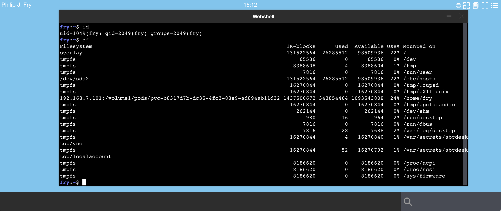

Use PersistentVolume and PersistentVolumeClaim to retain user's home directory files
To retain user's home directory files, you can define
In most cases with managed providers, you do not need to create a Persistent Volume, just a Persistent Volume Claim. Even in a non-managed set up, the Persistent Volume is generally created by the cluster administrator while Persistent Volume Claim is used by the end-user. The Persistent Volume Claim is namespaced ressource.
- abcdestkop has a
Persistent Volume Claimsupport.
Optionally, if you need a cluster administrator role, then abcdestkop can create
Persistent VolumeandPersistent Volume Claim.
Define ClusterRole only if you need to create Persistent Volume
Persistent Volume is a non-namespaced resource, so you need to update the pyos-role to ClusterRole to allow methods [ "get", "list", "create", "patch", "delete" ]
- apiGroups: [""]
resources: ["persistentvolumes"]
verbs: ["get", "list", "create", "patch", "delete"]
Update the default pyos role to ClusterRole
kubectl delete -f https://raw.githubusercontent.com/abcdesktopio/conf/main/kubernetes/rbac-role.yaml
kubectl apply -f https://raw.githubusercontent.com/abcdesktopio/conf/main/kubernetes/rbac-cluster.yaml
Define persistent volume and persistent volume claim
To define Persistent Volume or Persistent Volume Claim, update the od.config file and set
desktop.homedirectorytype: 'persistentVolumeClaim'
desktop.persistentvolume: { YOUR PERSISTENT VOLUME DICT CONFIGURATION TEMPLATE - THIS CAN BE NONE }
desktop.persistentvolumeclaim: 'NAME OF AN EXISTING PVC' OR { YOUR PERSISTENT VOLUME CLAIM DICT CONFIGURATION TEMPLATE }
desktop.removepersistentvolume: False
desktop.removepersistentvolumeclaim: True
desktop.homedirectorytype
To use desktop.persistentvolume and desktop.persistentvolumeclaim values, the desktop.homedirectorytype must be set to persistentVolumeClaim
desktop.homedirectorytype: 'persistentVolumeClaim'
Define desktop.persistentvolume is optional
desktop.persistentvolume is optional and can be set to None, else the type of desktop.persistentvolume parameter must be a dict (dictionary).
If desktop.persistentvolume is None then abcdesktop does not create a persistent volume. The persistent volumes should already exist or created by another provisioning engine.
If desktop.persistentvolume is a dict then abcdesktop creates the persistent volume.
If you set desktop.persistentvolume to None, or if you create the persistent volume manualy, then you don't need to update the pyos role.
Define desktop.persistentvolumeclaim
The type of desktop.persistentvolumeclaim is dictionary or a string.
If desktop.homedirectorytype is set to 'persistentVolumeClaim', then desktop.persistentvolumeclaim must be defined as a dict or a str.
Kubernetes persistent volume is a namespaced resource, so you can keep the default rbac-role for pyos-role.
if desktop.persistentvolume option is defined then abcdesktop sets the persistent volume claim specification attribut volumeName value to the created persistent volume.
Get more information about PersistentVolume and PersistentVolumeClaim.
Define desktop.persistentvolumeclaim as a string
All pods will share the same persistent volume claim, and the same persistent volume. The access mode must be ReadWriteMany, else only one pod (the first one) will bound the pvc.
Create a persistent volume
kubectl get pv -n abcdesktop
NAME CAPACITY ACCESS MODES RECLAIM POLICY STATUS CLAIM STORAGECLASS REASON AGE
pv-nfs 10Gi RWX Retain Bound abcdesktop/homedir nfs-csi 3d22h
kubectl describe pv pv-nfs
Name: pv-nfs
Labels: <none>
Annotations: pv.kubernetes.io/bound-by-controller: yes
pv.kubernetes.io/provisioned-by: nfs.csi.k8s.io
Finalizers: [kubernetes.io/pv-protection]
StorageClass: nfs-csi
Status: Bound
Claim: abcdesktop/homedir
Reclaim Policy: Retain
Access Modes: RWX
VolumeMode: Filesystem
Capacity: 10Gi
Node Affinity: <none>
Message:
Source:
Type: CSI (a Container Storage Interface (CSI) volume source)
Driver: nfs.csi.k8s.io
FSType:
VolumeHandle: nfs-server.default.svc.cluster.local/share##
ReadOnly: false
VolumeAttributes: server=192.168.7.101
share=/volume1/homedir
Events: <none>
Create a persistent volume claim
kubectl get pvc -n abcdesktop
NAME STATUS VOLUME CAPACITY ACCESS MODES STORAGECLASS AGE
homedir Bound pv-nfs 10Gi RWX nfs-csi 3d22h
kubectl describe pvc homedir -n abcdesktop
Name: homedir
Namespace: abcdesktop
StorageClass: nfs-csi
Status: Bound
Volume: pv-nfs
Annotations: pv.kubernetes.io/bind-completed: yes
Finalizers: [kubernetes.io/pvc-protection]
Capacity: 10Gi
Access Modes: RWX
VolumeMode: Filesystem
Used By: fry-88a6e
hermes-7d84b
Events: <none>
In the od.config file, set the values
desktop.homedirectorytype: 'persistentVolumeClaim'
desktop.persistentvolume: None
desktop.persistentvolumeclaim: 'homedir'
desktop.removepersistentvolumeclaim: False
If you need to use subPath
desktop.persistentvolumeclaimforcesubpath: True
'subPath' is not supported for ephemeral container.
Define desktop.persistentvolumeclaim as a dictionary
in od.config file
# set to persistentVolumeClaim
desktop.homedirectorytype: 'persistentVolumeClaim'
desktop.persistentvolumespec: None
desktop.persistentvolumeclaim: {
'metadata': {
'name': '{{ provider }}-{{ userid }}',
},
'spec': {
'storageClassName': 'mystorageclass',
'resources': {
'requests': {
'storage': '1Gi'
}
},
'accessModes': [ 'ReadWriteMany' ] } }
Replace mystorageclass by storageclass of your cloud provider.
To list the storage classes
kubectl get storageclass
- The example output is as follows on the cloud provider aws.
NAME PROVISIONER RECLAIMPOLICY VOLUMEBINDINGMODE ALLOWVOLUMEEXPANSION AGE
gp2 (default) kubernetes.io/aws-ebs Delete WaitForFirstConsumer false
- The example output is as follows on the cloud provider digitalocean.
NAME PROVISIONER RECLAIMPOLICY Immediate false 3h22m
do-block-storage (default) dobs.csi.digitalocean.com Delete Immediate true 2d7h
do-block-storage-retain dobs.csi.digitalocean.com Retain Immediate true 2d7h
do-block-storage-xfs dobs.csi.digitalocean.com Delete Immediate true 2d7h
do-block-storage-xfs-retain dobs.csi.digitalocean.com Retain Immediate true 2d7h
Template values for desktop.persistentvolumespec and desktop.persistentvolumeclaim
Value defines inside {{ VALUE }} is replaced by the templated value keys:
The template values can be one of them :
| var | description |
|---|---|
| cn | Common Name |
| uid | user id |
| gid | group id |
| uidNumber | user id number |
| gidNumber | group id number |
| homeDirectory | homeDirectory |
| loginShell | loginShell |
| description | description |
| groups | groups |
| gecos | gecos |
| provider | provider |
| protocol | protocol |
| providertype | providertype |
| name | user name |
| userid | user id |
| locale | user's locale |
| uuid | a uniqu uuid |
| template tag value | tag value set by auth rules |
The uuid have the same value for the persistent volume and for the persistent volume claim. uuid can be use for naming the PVC or the PV, or on all string values.
desktop.persistentvolumeclaim: {
'metadata': {
'name': '{{ provider }}-{{ userid }}-{{ uuid }}',
},
'spec': {
'volumeName': '{{ provider }}-{{ userid }}-{{ uuid }}',
'storageClassName': 'nfs-csi',
'resources': {
'requests': {
'storage': '1Gi'
}
},
'accessModes': [ 'ReadWriteOnce' ] } }
desktop.persistentvolume: {
'metadata': { 'name': '{{ provider }}-{{ userid }}-{{ uuid }}' },
'spec': {
'storageClassName': 'nfs-csi',
'mountOptions': [
'nfsvers=3'
],
'capacity': {
'storage': '10Gi'
},
'accessModes': [ 'ReadWriteOnce' ],
'csi': {
'driver': 'nfs.csi.k8s.io',
'readOnly': False,
'volumeHandle': '192.168.7.101#volume1#homedir#{{ userid }}',
'volumeAttributes': {
'server': '192.168.7.101',
'share': '/volume1/homedir/{{ userid }}'
} } } }
The variables persistentvolumeclaim and persistentvolume become
desktop.persistentvolumeclaim: {
'metadata': {'name': 'planet-fry-1841f'},
'spec': {
'volumeName': 'planet-fry-1841f',
'storageClassName': 'nfs-csi',
'resources': {
'requests': {'storage': '1Gi'}
},
'accessModes': ['ReadWriteOnce']
}
}
desktop.persistentvolume: {
'metadata': { 'name': 'planet-fry-1841f'},
'spec': {
'storageClassName': 'nfs-csi',
'mountOptions': ['nfsvers=3'],
'capacity': {'storage': '10Gi'},
'accessModes': ['ReadWriteOnce'],
'csi': {
'driver': 'nfs.csi.k8s.io',
'readOnly': False,
'volumeHandle': '192.168.7.101#volume1#homedir#fry',
'volumeAttributes': {
'server': '192.168.7.101',
'share': '/volume1/homedir/fry'
}
}
}
}
desktop.removepersistentvolume
During the remove desktop process, delete or not the persistent volume. The persistent volume can be delete only if the desktop.deletepersistentvolumeclaim is True.
The default value for desktop.removepersistentvolume is False.
desktop.removepersistentvolumeclaim
During the remove desktop process, delete or not the persistent volume claim.
The default value for desktop.removepersistentvolumeclaim is False.
Define persistentVolume using csi-driver-nfs
In this example, we use nfs protocol to share user home directory on each worker node
Use the https://github.com/kubernetes-csi/csi-driver-nfs as a csi-driver-nfs with a nfs server as backend.
On the nfs server
On the nfs server, create an export with the no_root_squash option
For example export /volume1/pods
/volume1/pods 192.168.7.0/24(rw,async,no_wdelay,crossmnt,insecure,no_root_squash,insecure_locks,anonuid=1025,anongid=100)
Install the csi-driver-nfs
Run the install install-driver.sh command from kubernetes-csi/csi-driver-nfs GitHub repository.
curl -skSL https://raw.githubusercontent.com/kubernetes-csi/csi-driver-nfs/v4.4.0/deploy/install-driver.sh | bash -s v4.4.0 --
Create a storage class file nfs-csi-sc-ds01.yaml,
- replace server:
192.168.7.101by your own nfs server ip address - replace share:
/volume1/podsby your own share
Content of the default nfs-csi-sc-ds01.yaml
apiVersion: storage.k8s.io/v1
kind: StorageClass
metadata:
name: nfs-csi-sc-ds01
provisioner: nfs.csi.k8s.io
parameters:
server: 192.168.7.101
share: /volume1/pods
mountPermissions: "0755"
# csi.storage.k8s.io/provisioner-secret is only needed for providing mountOptions in DeleteVolume
# csi.storage.k8s.io/provisioner-secret-name: "mount-options"
# csi.storage.k8s.io/provisioner-secret-namespace: "default"
reclaimPolicy: Delete
volumeBindingMode: Immediate
mountOptions:
- nfsvers=3
kubectl apply -f nfs-csi-sc-ds01.yaml
You read the response on stdout
storageclass.storage.k8s.io/nfs-csi-sc-ds01 created
Check the storage class nfs-csi-sc-ds01
kubectl get sc
NAME PROVISIONER RECLAIMPOLICY VOLUMEBINDINGMODE ALLOWVOLUMEEXPANSION AGE
nfs-csi-sc-ds01 nfs.csi.k8s.io Delete Immediate false 18m
Update the od.config file
In your od.config file, define the entry desktop.persistentvolumeclaim
desktop.homedirectorytype: 'persistentVolumeClaim' to use the persistent volume claim features.desktop.persistentvolume: create a new persistent volume.desktop.persistentvolumeclaimcreate a new persistent volume claim for the user's homeDir, the storageClassNamenfs-csi-sc-ds01
The Persistent Volume and Persistent Volume Claim are created by abcdesktop. Abcdesktop defines a binding between that specific PV and PVC
# set to persistentVolumeClaim
desktop.homedirectorytype: 'persistentVolumeClaim'
desktop.deletepersistentvolume: False
desktop.deletepersistentvolumeclaim: True
desktop.persistentvolume: {
'metadata': { 'name': '{{ provider }}-{{ userid }}' },
'spec': {
'storageClassName': 'nfs-csi',
'mountOptions': [
'nfsvers=3'
],
'capacity': {
'storage': '10Gi'
},
'accessModes': [ 'ReadWriteOnce' ],
'csi': {
'driver': 'nfs.csi.k8s.io',
'readOnly': False,
'volumeHandle': '192.168.7.101#volume1#homedir#{{ userid }}',
'volumeAttributes': {
'server': '192.168.7.101',
'share': '/volume1/homedir/{{ userid }}'
} } } }
desktop.persistentvolumeclaim: {
'metadata': {
'name': '{{ provider }}-{{ userid }}',
},
'spec': {
'storageClassName': 'nfs-csi',
'volumeName': '{{ provider }}-{{ userid }}',
'resources': {
'requests': {
'storage': '1Gi'
}
},
'accessModes': [ 'ReadWriteMany' ] } }
Update the new config file and restart pyos pods.
Update the pyos role to allow
kubectl delete -f https://raw.githubusercontent.com/abcdesktopio/conf/main/kubernetes/rbac-role.yaml
kubectl apply -f https://raw.githubusercontent.com/abcdesktopio/conf/main/kubernetes/rbac-cluster.yaml
kubectl delete configmap abcdesktop-config -n abcdesktop
kubectl create configmap abcdesktop-config --from-file=od.config -n abcdesktop
kubectl delete pods -l run=pyos-od -n abcdesktop
abcdesktop creates PV and PVC for you.
Login to your abcdesktop service
Login as user (Philip J. Fry, fry)

The new desktop for Philip J. Fry is created.
Start the web shell command using the search bar

Using the web shell application start the df command

The fry home dir is mounted on 192.168.7.101:/volume1/pods/pvc-b8317d7b-dc35-4fc3-88e9-ad894ab11d32
List the PersistentVolume and PersistentVolumeClaim
List the new PersistentVolume
kubectl get pv
NAME CAPACITY ACCESS MODES RECLAIM POLICY STATUS CLAIM STORAGECLASS REASON AGE
planet-fry 10Gi RWO Retain Bound abcdesktop/planet-fry nfs-csi 2m58s
List the new PersistentVolumeClaim
kubectl get pvc -n abcdesktop
NAME STATUS VOLUME CAPACITY ACCESS MODES STORAGECLASS AGE
planet-fry Bound planet-fry 10Gi RWO nfs-csi 107s
Get the persistent volume claim's description
kubectl describe pvc planet-fry -n abcdesktop
Name: planet-fry
Namespace: abcdesktop
StorageClass: nfs-csi
Status: Bound
Volume: planet-fry
Labels: access_provider=planet
access_providertype=ldap
access_userid=fry
Annotations: pv.kubernetes.io/bind-completed: yes
Finalizers: [kubernetes.io/pvc-protection]
Capacity: 10Gi
Access Modes: RWO
VolumeMode: Filesystem
Used By: fry-055f6
Events: <none>
Get the persistent volume description
kubectl describe pv planet-fry
Name: planet-fry
Labels: access_provider=planet
access_providertype=ldap
access_userid=fry
Annotations: pv.kubernetes.io/bound-by-controller: yes
Finalizers: [kubernetes.io/pv-protection]
StorageClass: nfs-csi
Status: Bound
Claim: abcdesktop/planet-fry
Reclaim Policy: Retain
Access Modes: RWO
VolumeMode: Filesystem
Capacity: 10Gi
Node Affinity: <none>
Message:
Source:
Type: CSI (a Container Storage Interface (CSI) volume source)
Driver: nfs.csi.k8s.io
FSType:
VolumeHandle: 192.168.7.101#volume1#homedir#fry
ReadOnly: false
VolumeAttributes: server=192.168.7.101
share=/volume1/homedir/fry
Events: <none>
Define persistentVolume using storage class do-block-storage on digitalocean
Update od.config file
Update od.config file with the options
desktop.homedirectorytype: 'persistentVolumeClaim'
desktop.persistentvolume: None
desktop.persistentvolumeclaim: {
'metadata': {
'name': '{{ provider }}-{{ userid }}',
},
'spec': {
'storageClassName': 'do-block-storage',
'resources': {
'requests': {
'storage': '1Gi'
}
},
'accessModes': [ 'ReadWriteOnce' ] } }
Update the configmap
kubectl create -n abcdesktop configmap abcdesktop-config --from-file=od.config -o yaml --dry-run=client | kubectl replace -n abcdesktop -f -
Restart pyos pod
kubectl delete pods -l run=pyos-od -n abcdesktop
Login to your abcdesktop service, you should read on the html page, the status
b.Reading your persistent volume claim planet-fry, status is Pending, using storage class do-block-storage ....
b.Creating your desktop
b.Successfully assigned abcdesktop/fry-0d805 to pool-g8u8ddr44-yhh3i.................
b.Your pod gets event SuccessfulAttachVolume AttachVolume.Attach succeeded for volume "pvc-38899590-c94a-4849-a111-31ae7de624e1" ..
b.Started container i-planet-fry
b.pending: x-planet-fry is starting
b.Created container x-planet-fry
b.Your pod fry-0d805 is Pending..
c.Waiting for desktop graphical service 1/42........
c.Waiting for desktop spawner service 1/42
c.Waiting for desktop graphical service 2/42
Rock and roll
Read the new pod for fry the user fry
kubectl get pods -n abcdesktop
NAME READY STATUS RESTARTS AGE
fry-0d805 4/4 Running 0 17m
memcached-od-5ff8844d56-lcn7p 1/1 Running 0 106m
mongodb-od-77c945467d-97g8w 1/1 Running 0 106m
nginx-od-7445969696-lpfhh 1/1 Running 0 106m
openldap-od-5bbdd75864-dprvl 1/1 Running 0 106m
pyos-od-7584db6787-chtdc 1/1 Running 0 19m
speedtest-od-7f5484966f-5pl6k 1/1 Running 0 106m
Read the pvc for fry
kubectl get pvc -n abcdesktop
NAME STATUS VOLUME CAPACITY ACCESS MODES STORAGECLASS AGE
planet-fry Bound pvc-38899590-c94a-4849-a111-31ae7de624e1 1Gi RWO do-block-storage 17m
Read the pv for fry
kubectl get pv
NAME CAPACITY ACCESS MODES RECLAIM POLICY STATUS CLAIM STORAGECLASS REASON AGE
pvc-38899590-c94a-4849-a111-31ae7de624e1 1Gi RWO Delete Bound abcdesktop/planet-fry do-block-storage 17m
known issues
Bound a volume if desktop.deletepersistentvolumeclaim is False
When desktop.deletepersistentvolumeclaim is True and desktop.deletepersistentvolume is False, if you create manually the persistent volumes, you may have to patch the claimRef of the persistent volumes to make it Available again.
kubectl get pv
NAME CAPACITY ACCESS MODES RECLAIM POLICY STATUS CLAIM STORAGECLASS REASON AGE
planet-fry 10Gi RWO Retain Released abcdesktop/planet-fry nfs-csi 4m1
kubectl patch pv planet-fry -p '{"spec":{"claimRef": null}}'
persistentvolume/planet-fry patched
kubectl get pv
NAME CAPACITY ACCESS MODES RECLAIM POLICY STATUS CLAIM STORAGECLASS REASON AGE
planet-fry 10Gi RWO Retain Available nfs-csi 8m